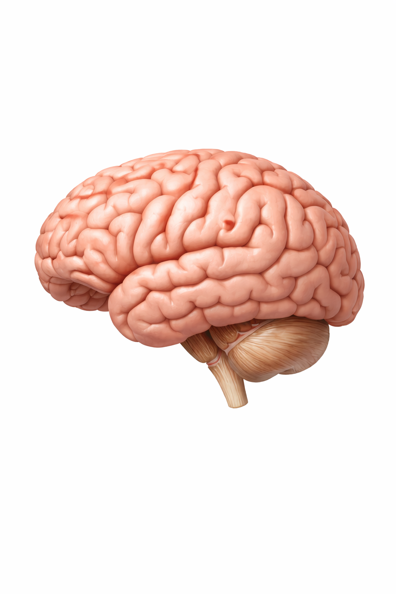
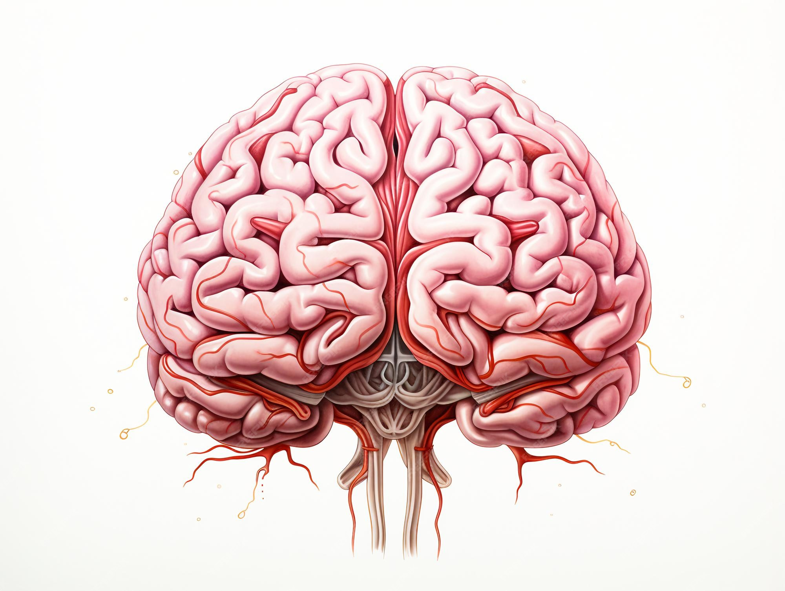
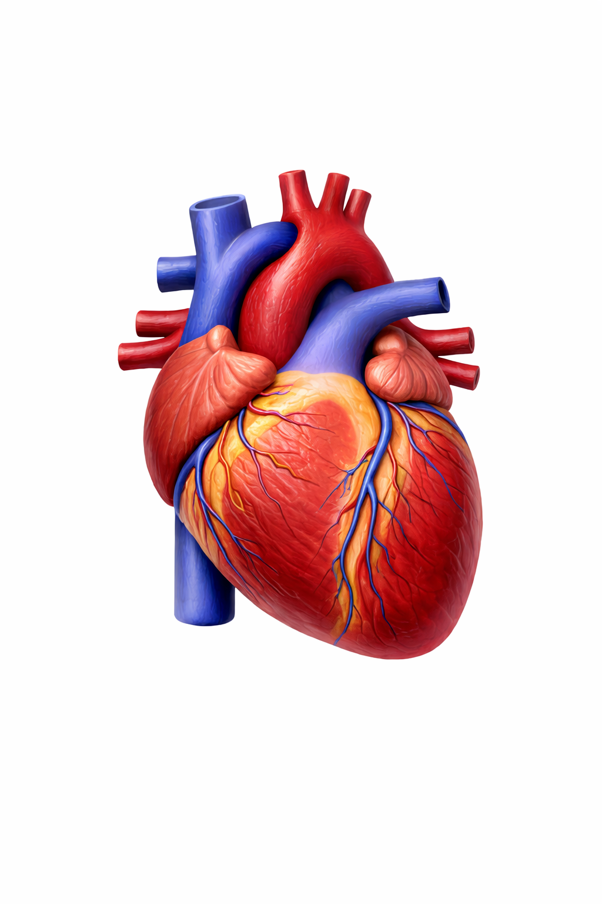
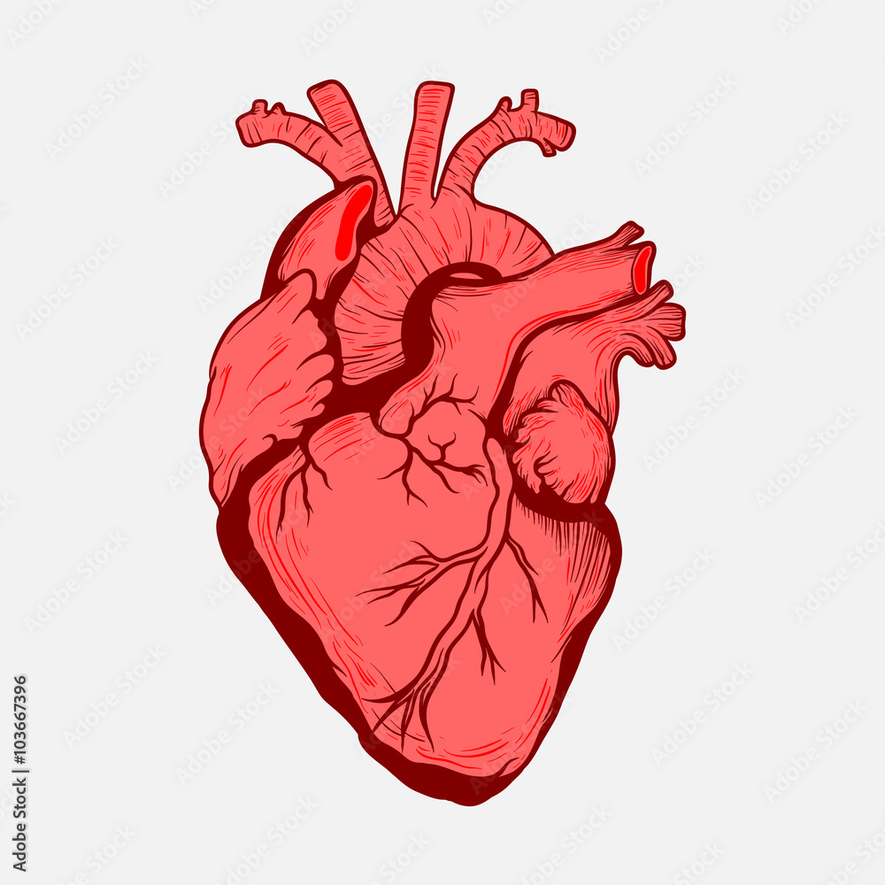
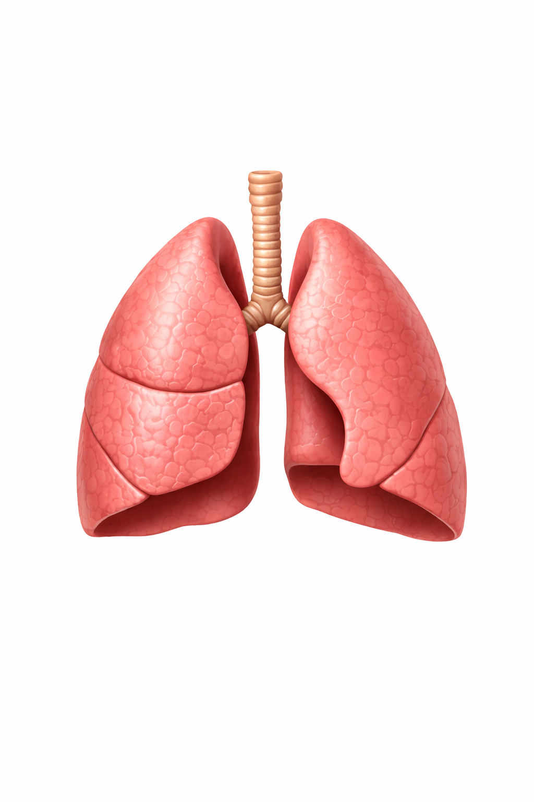
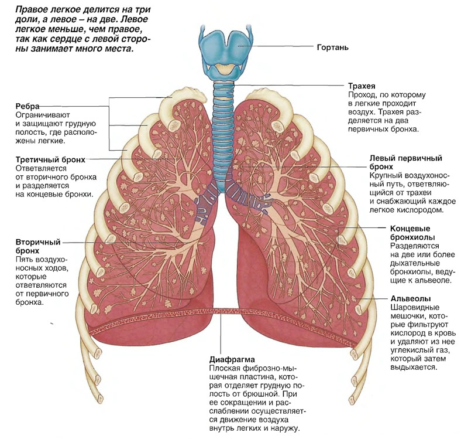
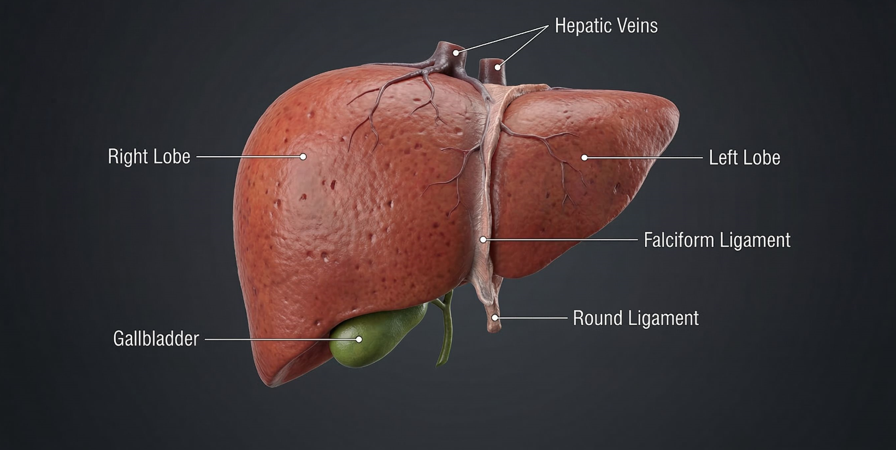
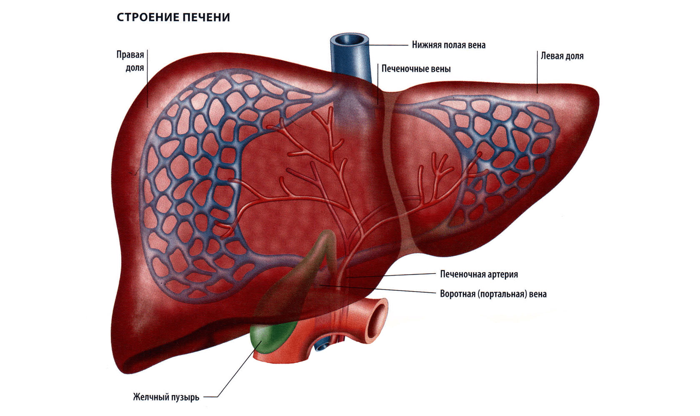
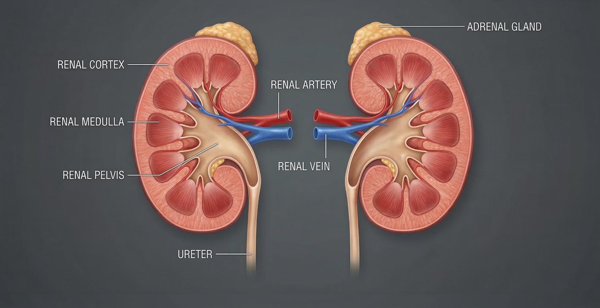
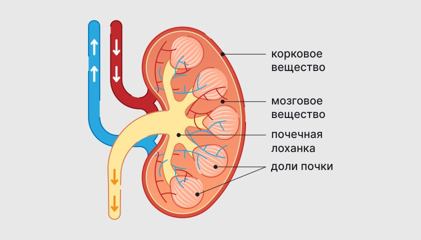

Напишите ваши предложения — мы обязательно рассмотрим!
Расскажите, что вам понравилось или что можно улучшить.


Мозг является главным органом нервной системы человека. Он управляет всеми процессами организма. В мозге находится около восьмидесяти шести миллиардов нейронов. Эти клетки передают электрические сигналы. Благодаря этим сигналам человек может мыслить. Мозг помогает анализировать информацию. Он управляет движениями тела. Также он контролирует работу органов. Этот орган отвечает за память. Без мозга невозможно сознание.
Мозг состоит из нескольких основных частей. Большой мозг отвечает за мышление. Мозжечок помогает координировать движения. Ствол мозга контролирует дыхание. Он также регулирует сердечный ритм. Нервные сигналы проходят через нейроны. Эти сигналы передаются очень быстро. Благодаря этому организм реагирует мгновенно. Мозг постоянно обрабатывает информацию. Он работает даже во время сна.
Здоровье мозга зависит от образа жизни. Важно хорошо высыпаться. Сон помогает мозгу восстанавливаться. Правильное питание обеспечивает энергией. Физическая активность улучшает кровообращение. Чтение и обучение тренируют мозг. Полезно также решать задачи. Общение с людьми стимулирует мышление. Стресс может ухудшать работу мозга. Поэтому важно отдыхать.


Сердце является главным органом кровеносной системы. Оно работает как насос. Сердце перекачивает кровь по всему телу. Благодаря этому клетки получают кислород. Также они получают питательные вещества. В среднем сердце делает около ста тысяч ударов в сутки. Этот орган начинает работать ещё до рождения человека. Сердце имеет четыре камеры. Они помогают направлять кровь. Благодаря этому кровь циркулирует постоянно.
Сердце состоит из предсердий и желудочков. Предсердия принимают кровь. Затем кровь поступает в желудочки. После этого она выталкивается в артерии. Кровь движется по сосудам. Затем она возвращается по венам. Этот процесс повторяется постоянно. Сердце регулируется нервной системой. Также на него влияют гормоны. Физическая нагрузка ускоряет его работу.
Для здоровья сердца важен правильный образ жизни. Регулярные упражнения укрепляют сердце. Полезно правильно питаться. Нужно есть больше овощей и фруктов. Важно избегать курения. Курение повреждает сосуды. Также вреден сильный стресс. Нужно достаточно спать. Полезно контролировать вес. Регулярные обследования помогают сохранить здоровье.


Лёгкие являются органами дыхательной системы. Они обеспечивают организм кислородом. При вдохе воздух попадает в лёгкие. Затем кислород поступает в кровь. Углекислый газ выводится наружу. Этот процесс называется газообменом. В лёгких находятся миллионы альвеол. Эти пузырьки увеличивают площадь поверхности. Благодаря этому дыхание становится эффективным. Лёгкие работают постоянно.
Каждый день человек делает тысячи вдохов. В среднем около двадцати тысяч. При физической нагрузке дыхание ускоряется. Лёгкие помогают поддерживать баланс газов. Они очищают воздух от некоторых частиц. Однако загрязнение может вредить им. Курение сильно повреждает лёгкие. Поэтому важно избегать вредных привычек. Чистый воздух полезен для дыхания. Лёгкие играют важную роль в организме.
Здоровье лёгких зависит от образа жизни. Полезно больше гулять на свежем воздухе. Физическая активность улучшает дыхание. Важно избегать загрязнённого воздуха. Также полезно правильно питаться. Иммунная система защищает лёгкие. Нужно вовремя лечить инфекции. Регулярные обследования помогают выявить болезни. Вакцинация может защищать от некоторых заболеваний. Всё это помогает сохранить здоровье дыхательной системы.
Самый крупный орган.
Выполняет более 500 функций.


Печень является одним из самых важных органов организма. Она выполняет сотни функций. Печень помогает очищать кровь. Она удаляет токсины. Также она участвует в обмене веществ. Печень производит желчь. Желчь помогает переваривать жиры. Этот орган хранит запас питательных веществ. Печень участвует в переработке лекарств. Она играет важную роль в поддержании здоровья.
Печень находится в правой части живота. Она имеет довольно большой размер. Кровь постоянно проходит через неё. Печень фильтрует вредные вещества. Она помогает поддерживать уровень сахара. Также она участвует в синтезе белков. Печень работает непрерывно. Она может частично восстанавливаться. Это уникальная способность. Однако сильные повреждения опасны.
Здоровье печени зависит от образа жизни. Важно избегать чрезмерного употребления алкоголя. Правильное питание помогает поддерживать её функции. Нужно есть больше овощей. Жирная пища может перегружать печень. Регулярная физическая активность полезна. Также важно контролировать вес. Вакцинация защищает от некоторых инфекций печени. Регулярные обследования помогают выявлять проблемы. Забота о здоровье печени очень важна.
Парный орган фильтрации крови.
В каждой почке ~1 млн нефронов.


Почки являются органами выделительной системы. Они фильтруют кровь. В почках образуется моча. С её помощью организм избавляется от отходов. Почки поддерживают баланс жидкости. Они регулируют уровень солей. Также они участвуют в контроле давления. В почках находятся миллионы фильтрующих единиц. Эти единицы называются нефронами. Благодаря им кровь очищается.
Почки работают постоянно. Они фильтруют огромное количество жидкости. Каждый день через них проходит сотни литров крови. Однако большая часть жидкости возвращается обратно. В итоге образуется примерно полтора литра мочи. Почки помогают поддерживать баланс веществ. Они регулируют уровень калия и натрия. Также они участвуют в выработке гормонов. Эти гормоны важны для организма. Работа почек очень важна для здоровья.
Здоровье почек зависит от многих факторов. Важно пить достаточное количество воды. Это помогает почкам работать лучше. Нужно избегать чрезмерного употребления соли. Соль может повышать давление. Полезно правильно питаться. Физическая активность улучшает кровообращение. Также важно контролировать уровень сахара. Некоторые болезни могут повреждать почки. Регулярные обследования помогают выявить проблемы.